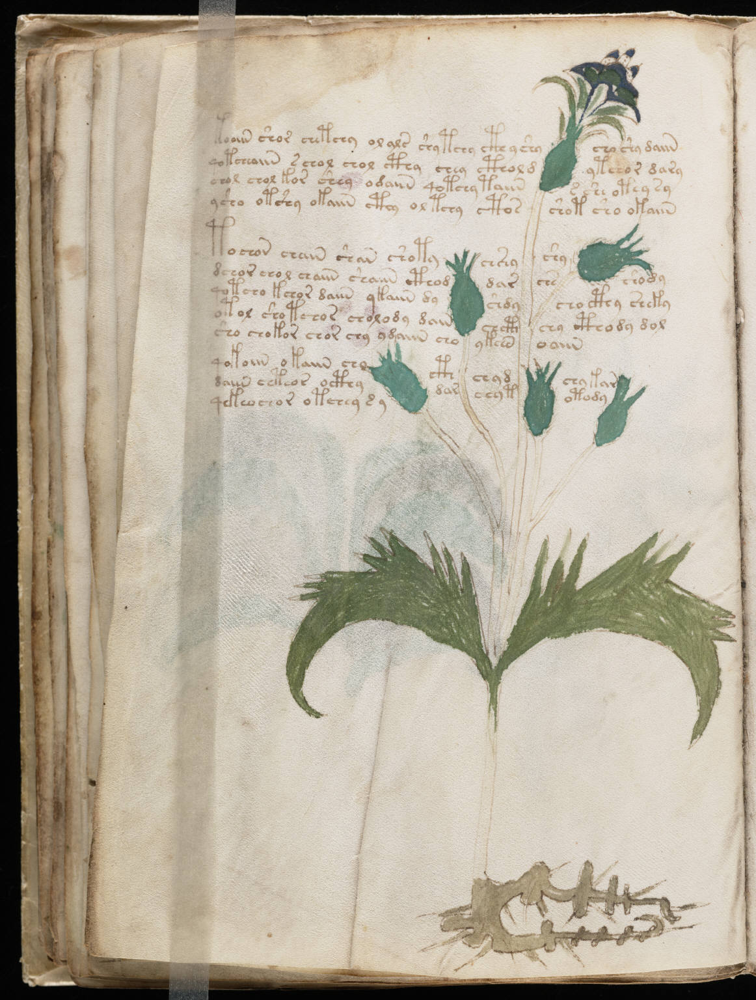

f29v
1kooiin shor chetchy olals shytchy cth y shycho shy daiin2qotcheaiin schol chol cthy chey ctholdytchor dary3chol chol kor shey odaiin qotchy taiins she otey sy4ysho otshy okaiin cthy oltchy ctosshot sho okaiin5tochon chain shan shotychshyshy6dchor chol chaiin shaiin cthoddarchsshody7qotcho kchor daiin ykaiin dyshdycho cthy sheky8otol sho tchos cholody dainchcthchy cthody dol9sho chokor chor chy ydaiin choykchnoaiin10qokoiin okaiin chocthchydchykar11daiin chteor octhydarchytotody12qekeochor otchey s y
